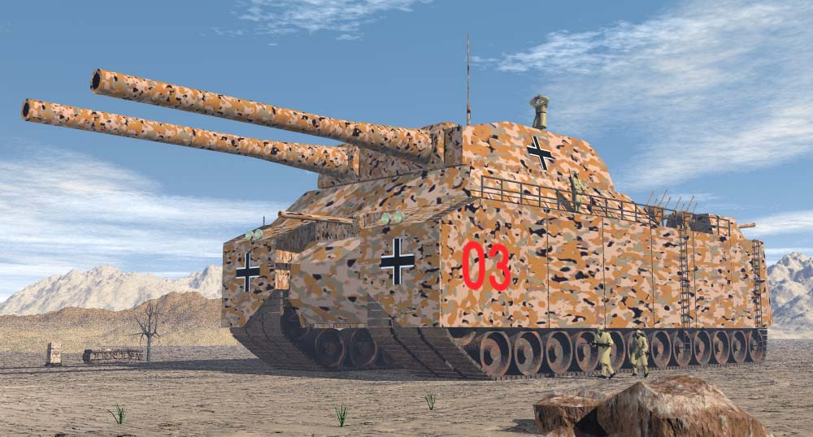
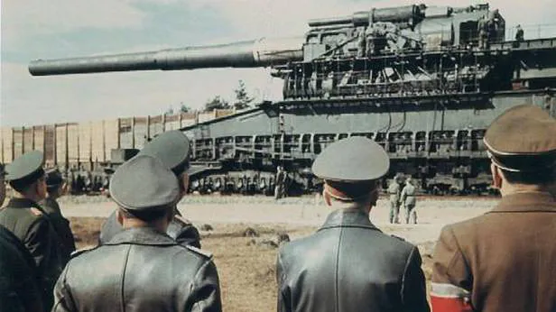
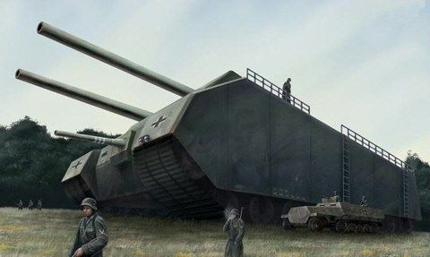

Landkreuzer P-1000 Ratte (Szczur)
prototypowy czołg superciężki, przeznaczony dla sił zbrojnych III Rzeszy. Ważący 1000 ton P-1000 Ratte (w planach) byłby ponad 5 razy cięższy od największego wyprodukowanego kiedykolwiek czołgu Maus[2]. Zaprojektowany przez zakłady Friedrich Krupp AG w 1942 i zaaprobowany przez Adolfa Hitlera, został ostatecznie zarzucony na początku 1943 z inicjatywy Alberta Speera.
Budowę czołgu rozpoczęto, ale nigdy jej nie dokończono. Pojazd miał być uzbrojony w dwa działa kalibru 280 mm zamontowane w wieży typu użytego także na pancernikach typu Scharnhorst. Jedna z tych wież została wyprodukowana przed ostatecznym zarzuceniem projektu, a następnie użyta w baterii dział nabrzeżnych w Norwegii. Czołg miał być również uzbrojony w pojedyncze działo 128 mm, osiem działek przeciwlotniczych Flak 38 kalibru 20 mm oraz dwa karabiny maszynowe MG 151/15 kalibru 15 mm. Po bokach czołgu miały znajdować się po 3 gąsienice o szerokości 1,2 metra. Napęd miały stanowić dwa 24-cylindrowe silniki MAN V12Z32/44 o mocy 8500 KM lub osiem 20 cylindrowych silników Daimler-Benz MB501 o mocy 2000 KM każdy, aby osiągnąć wymagane 16000 KM potrzebne do poruszenia pojazdu.
W planach był także jeszcze większy projekt Landkreuzer P. 1500 Monster, również zarzucony we wczesnej fazie. Miała to być samobieżna wersja działa kolejowego Schwerer Gustav (znanego także jako Dora) wyposażonego w armatę kalibru 800 mm.

 

Ostatnia aktualizacja: 17.11.2019